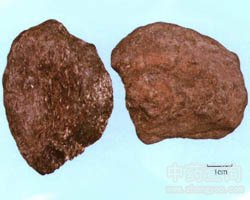

青礞石

拼音
Qīnɡ Ménɡ Shí
别名
礞石
来源
本品为变质岩类黑云母片岩或绿泥石化云母碳酸盐片岩。采挖后,除去泥沙和杂石。
生境分布
生态环境：产于接触变质区域变质基中酸碱性浸入岩及火成岩、伟晶岩中，是中酸性火成岩的主要造岩矿物之一。 资源分布：分布于江苏、浙江、河南、湖北、湖南、四川等地。
药材特点
1.黑云母片岩 主要由黑云母及少量石英、中长石、绿帘石等矿物组成的集合体。呈不规则扁块状，无明显棱角，其中有鳞片状矿物具定向排列，彼此相连。断面可见明显的片状构造，鳞片状变晶结构。岩石呈黑色，有的带暗绿色调，珍珠光泽，质软而脆，易剥碎。 2.绿泥石化云母碳酸盐片岩 主要由方解石、白云石、金云母(部分转变为绿泥石，即绿泥石化)、绢云母、石英等矿物组成的集合体。呈不规则块体。其中粒状矿物和鳞片状矿物定向排列为片状结构，鳞片花岗变晶结构，但不甚明显。岩石呈灰绿色，夹于其中的鳞片状矿物显珍珠光泽。质较疏松，易剥碎。遇稀盐酸即有气泡发生。
性状
黑云母片岩：主为鳞片状或片状集合体。呈不规则扁块状或长斜块状，无明显棱角。褐黑色或绿黑色，具玻璃样光泽。质软，易碎，断面呈较明显的层片状。碎粉主为绿黑色鳞片（黑云母），有似星点样的闪光。气微，味淡。 绿泥石化云母碳酸盐片岩：为鳞片状或粒状集合体。呈灰色或绿灰色，夹有银色或淡黄色鳞片，具光泽。质松，易碎，粉末为灰绿色鳞片（绿泥石化云母片）和颗粒（主为碳酸盐），片状者具星点样闪光。遇稀盐酸产生气泡，加热后泡沸激烈。气微，味淡。
性味
甘、咸，平。
功能主治
坠痰下气，平肝镇惊。用于顽痰胶结，咳逆喘急，癫痫发狂，烦躁胸闷，惊风抽搐。
用法用量
3～6g,多入丸散服。
化学成分
黑云母片岩主要含钾、镁、铁、铝的硅酸盐[K(Mg·Fe)2(A1Si3O10)(OH，F)2〕，尚含有钛、钙、锰等杂质。
药理作用
1：无药理作用数据
摘录
《中国药典》